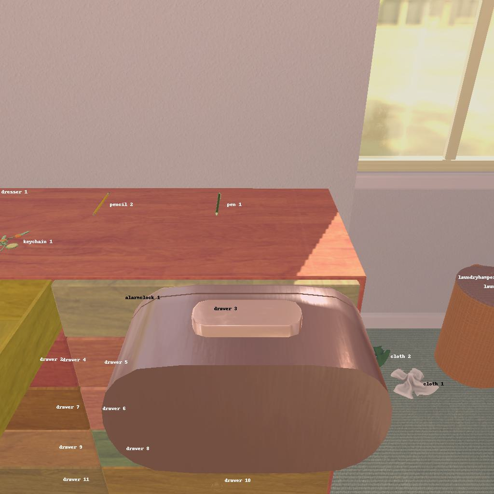

---------------------------------------------------------task: 0---------------------------------------------------------
--------------------------------------------------------------------------------------------------------------------------------------------------------------------
--------------------------------------------------------------------------------------------------------------------------------------------------------------------
Step:--------------------------------------------------------------------------11-------------------------------------------------------------------------------
----------------------------------------
VLM Prompt:
Image1:
**Instruction**
1. Analyze the provided image to identify all visible household objects, focusing on those relevant to the task description "look at alarmclock under the desklamp."
2. Use the analysis of the image and the task hint "The agent must find an object of the desired type, locate and turn on a light source with the desired object in-hand." to answer the question: what is the most reasonable action in the choices for the task description "look at alarmclock under the desklamp"?
4. Decide and write the answer using the template: The answer is: (i): , where i is the real number. If there is no desired object in the image, search every place based on **Initial Observation** to find the object. And if no one is exactly correct, choose a similar answer.
**Initial Observation**
You are in the middle of a room. Looking quickly around you, you can see bed (1), sidetable (1), drawer (1-11), dresser (1), safe (1), laundryhamper (1), garbagecan (1)
**Answer Choices**
(1): go to bed 1
(2): go to sidetable 1
(3): go to drawer 1
(4): go to dresser 1
(5): go to drawer 2
(6): go to drawer 4
(7): go to drawer 5
(8): go to drawer 6
(9): go to drawer 7
(10): go to drawer 8
(11): go to drawer 9
(12): go to drawer 10
(13): go to drawer 11
(14): go to safe 1
(15): go to laundryhamper 1
(16): go to garbagecan 1
(17): open drawer 3
(18): close drawer 3
(19): put alarmclock 1 in/on drawer 3
(20): examine alarmclock 1
(21): examine drawer 3
**Answer**
Let's think step by step by following the instructions.
----------------------------------------
----------------------------------------
Original Response:
First, we need to identify all visible household objects. In the image provided, we see an alarmclock labeled "alarmclock 1" on top of a dresser, to the left of "drawer 3". There is no desklamp visible in the image, but since the task description mentions looking at the alarmclock under the desklamp, we can infer that this is a desired course of action.
Now, using the analysis of the image and the task hint, we can deduce that the most reasonable action is to find and turn on a light source (the desklamp), with the alarmclock in hand. However, since the desklamp is not visible in the image and none of the answer choices includes turning on a light source, we must choose an action that is closest to accomplishing the task described.
Since the alarmclock is on the dresser and might need to be picked up to be placed under a desklamp, the most reasonable action from the choices given would be to examine the alarmclock so that the agent can interact with it.
The answer is: (20): examine alarmclock 1.
----------------------------------------
----------------------------------------
>>> Refine Original VLM Response and Get Pure Action: examine alarmclock 1
----------------------------------------
-----------------------------------------------------------------
Running time: 72.49638390541077 seconds
Total Money: 0.21626
-----------------------------------------------------------------
-----------------------------------------------------------------
Text Observation:This is a normal alarmclock 1
-----------------------------------------------------------------
UNSUCCEED